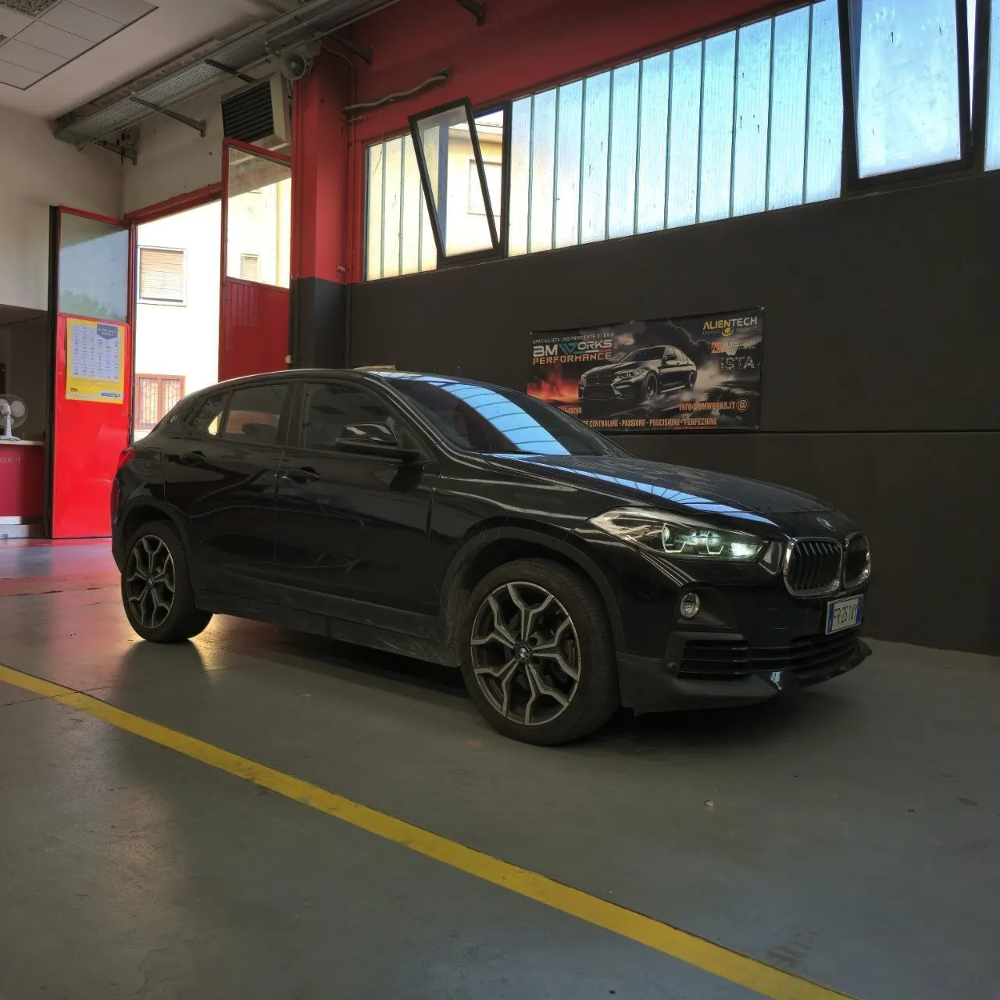
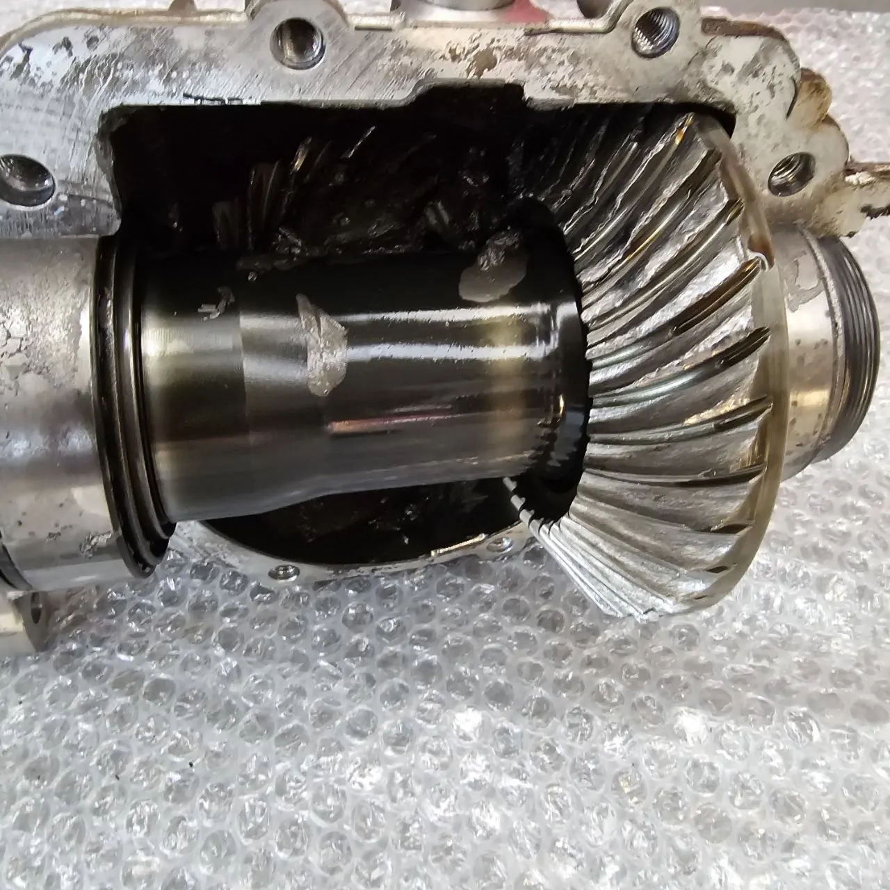
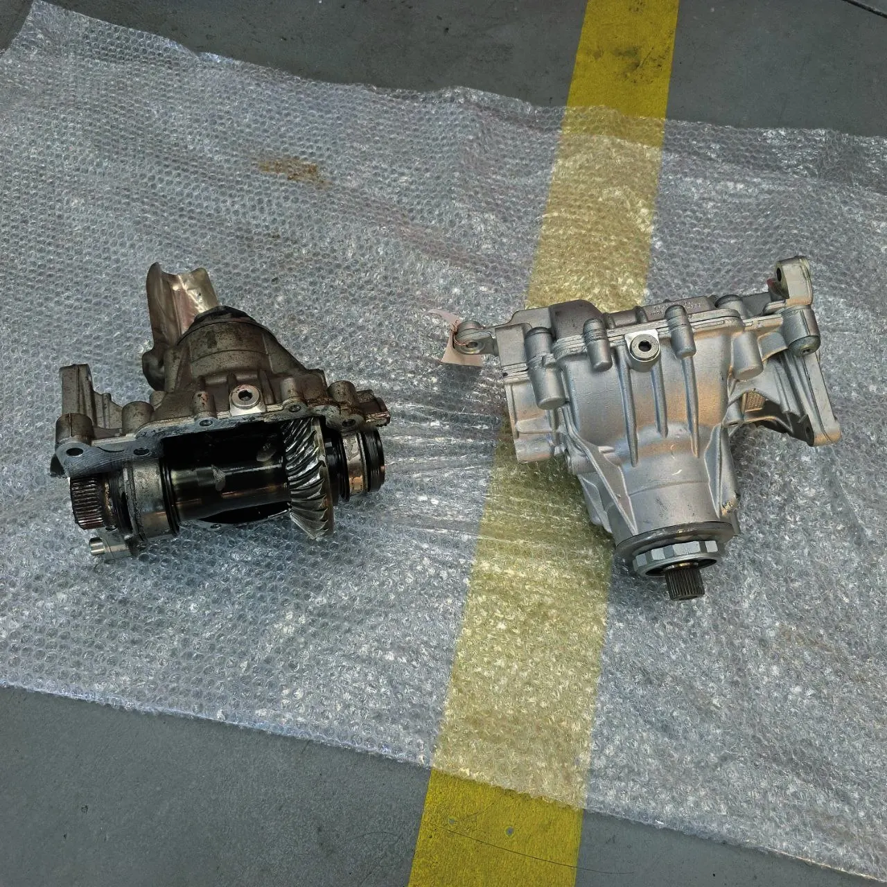
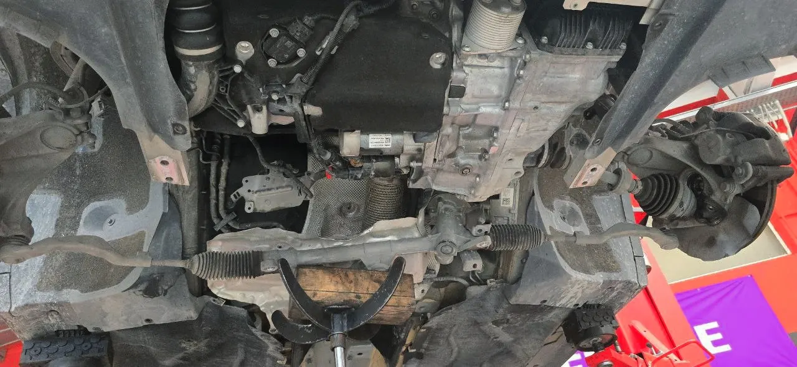
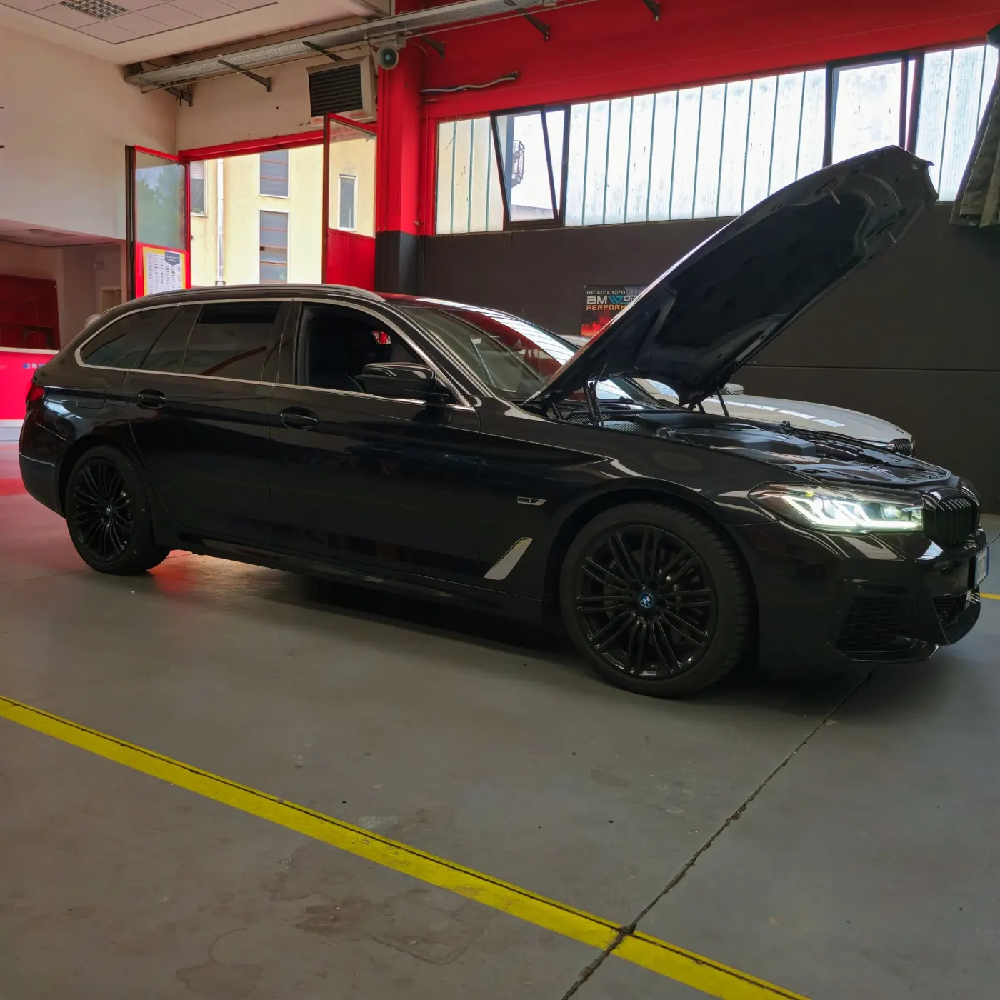

Problemi di Riscaldamento sulla Tua BMW? Metà Calda, Metà Fredda? Ecco Come Abbiamo Risolto!
Aria calda solo da un lato dell’abitacolo: la diagnosi ha rivelato una scatola di riscaldamento guasta. Ecco come l’abbiamo risolto.
Leggi di piùSpecialista indipendente BMW e MINI
Un cliente voleva solo codificare il ripartitore anteriore della sua BMW: la nostra diagnosi completa ha trovato il vero problema.

Quando un cliente si affida alla tua officina per risolvere un problema complesso, l’aspettativa è sempre alta. Questo è esattamente ciò che è successo quando un cliente è arrivato da noi, convinto di dover semplicemente codificare il ripartitore anteriore della sua BMW. Ma come spesso accade con i veicoli moderni, la questione era più intricata di quanto si potesse immaginare. Scoprire il problema reale e risolverlo efficacemente ha fatto la differenza tra un intervento inutile e una riparazione di successo. Ecco come abbiamo fatto.
Il cliente era già stato in un centro assistenza BMW, dove aveva speso una somma considerevole per una diagnosi e un intervento che, purtroppo, non hanno risolto il problema. La diagnosi iniziale indicava che il problema risiedeva nel ripartitore anteriore, un componente chiave nel sistema di trazione integrale. Tuttavia, nonostante la codifica effettuata, il problema persisteva.

La diagnosi precisa è fondamentale per qualsiasi tipo di intervento meccanico. Senza di essa, si rischia di effettuare riparazioni inutili e costose, come nel caso del nostro cliente. L’errore più comune in queste situazioni è fidarsi ciecamente della prima diagnosi senza considerare la possibilità di un problema sottostante.
Quando il cliente è arrivato da noi, abbiamo deciso di non limitarci a codificare il ripartitore anteriore. Invece, abbiamo condotto un’analisi approfondita di tutto il sistema di trazione. Questo ci ha permesso di individuare un problema nel differenziale anteriore, che era stato completamente trascurato dalla diagnosi precedente.

Il differenziale anteriore è un componente cruciale che permette alle ruote anteriori di girare a velocità diverse durante le curve. Se il differenziale non funziona correttamente, può causare una serie di problemi, tra cui rumori anomali, usura irregolare degli pneumatici e difficoltà nella manovrabilità del veicolo.
Dopo aver identificato il problema nel differenziale anteriore, abbiamo proposto al cliente una soluzione definitiva: la sostituzione del differenziale posteriore con uno nuovo. Questo intervento non solo ha risolto i problemi di trazione, ma ha anche migliorato significativamente le prestazioni generali del veicolo.

Un intervento mirato come quello che abbiamo effettuato offre numerosi vantaggi. Innanzitutto, evita spese inutili per riparazioni non necessarie. In secondo luogo, garantisce che il veicolo torni a funzionare al massimo delle sue potenzialità, migliorando sia la sicurezza che il comfort di guida.

Grazie al nostro approccio diagnostico dettagliato e alla competenza nel gestire problemi complessi, il cliente ha potuto risolvere il problema senza spendere una fortuna. Ma, soprattutto, ha recuperato la fiducia nel proprio veicolo e nelle officine indipendenti come la nostra, che mettono al primo posto la qualità del servizio.
La nostra officina si distingue per la capacità di andare oltre le diagnosi superficiali, offrendo soluzioni reali e durature. L’esperienza del nostro team ci permette di affrontare ogni problema con un approccio scientifico, basato su dati e test accurati, anziché su ipotesi.
Questa storia dimostra quanto sia cruciale affidarsi a professionisti competenti e attenti. La codifica del ripartitore anteriore era solo la punta dell’iceberg. Grazie alla nostra analisi dettagliata, siamo riusciti a individuare e risolvere il vero problema, restituendo al cliente un veicolo perfettamente funzionante. La fiducia che ci ha accordato è stata ben ripagata, e questo è ciò che rende il nostro lavoro così gratificante.
Affidarsi a esperti con un approccio sistematico e una profonda conoscenza meccanica è essenziale per evitare interventi inutili e costosi. La prossima volta che il tuo veicolo presenta un problema complesso, ricordati che una diagnosi accurata è la chiave per una riparazione di successo.
Blog

Aria calda solo da un lato dell’abitacolo: la diagnosi ha rivelato una scatola di riscaldamento guasta. Ecco come l’abbiamo risolto.
Leggi di più
Cos’è l’attivazione video in movimento, come funziona e perché affidarsi a professionisti per l’installazione sulla tua auto.
Leggi di più
Come abbiamo diagnosticato e riprogrammato il radar anteriore ACC di un cliente dopo un tentativo senza successo presso un BMW Center.
Leggi di piùChiamaci, scrivici su WhatsApp o inviaci un messaggio: ti rispondiamo con un preventivo chiaro.